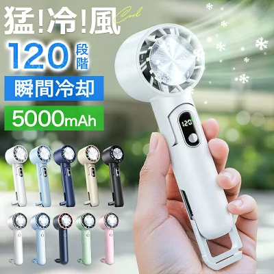
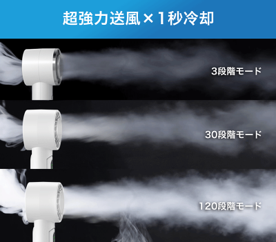
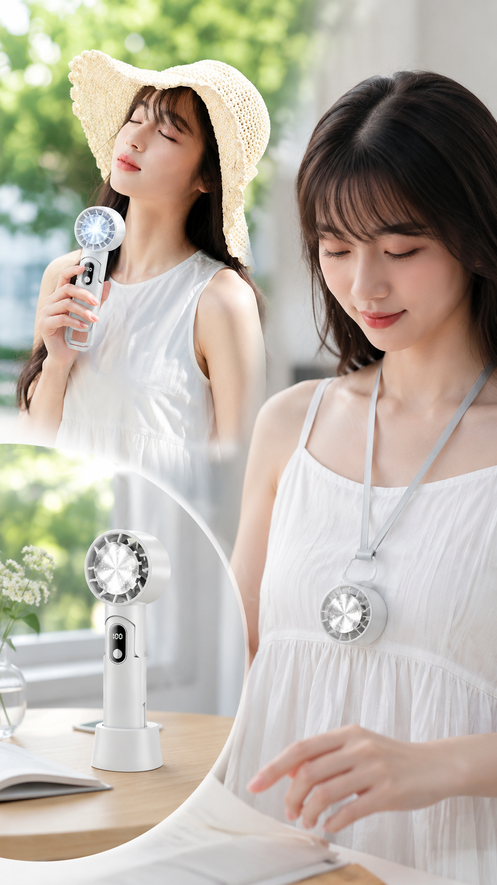

本ページには広告・アフィリエイトリンクが含まれます。紹介内容は楽天の商品ページおよびユーザー提供画像をもとに整理したもので、実使用による評価ではありません。価格・在庫・レビュー件数は変動するため、リンク先で最新情報をご確認ください。
外に出た瞬間の暑さや、移動中のむわっとした空気で、普通のハンディファンだけでは物足りないと感じることはありませんか。風は出ていても、気温が高い日は涼しく感じにくいこともあります。
そこで選択肢のひとつになるのが、冷却プレート付きのハンディファンです。この記事では、商品ページで確認できた案内をもとに特徴と購入前の確認ポイントを整理します。おすすめ断定や、必ず涼しくなるといった表現はしません。

この記事はこんな人向け
- 普通の風だけでは物足りないと感じやすい人
- 夏の通勤・外出が多い人
- 持ち運べる冷却グッズを比較したい人
- 購入前に確認ポイントを先に整理したい人
この商品の主な特徴
商品ページでは、冷却プレート付きのハンディファンとして案内されています。確認できた案内は次のとおりです。
- 冷却プレートを搭載していると案内されている
- 最大120段階の風量調整が案内されている
- 充電式（USB充電）として案内されている
- 卓上や手持ちでの利用が案内されている
- 商品ページには5000mAhおよび3200mAhの記載がある（選択モデルの確認が必要）

価格・ランキング・レビュー件数などの変動情報は断定しません。バッテリー容量もモデル差があり得るため、購入前に選択中の仕様を商品ページで確認してください。
普通のハンディファンとの違い
普通のハンディファンは風を送ることが中心です。冷却プレート付きモデルは、商品ページの案内上、プレートを肌へ当てて使う使い方が示されています。
ただし、冷たさの感じ方には個人差があります。「必ず冷える」「体温を下げる」「熱中症を防ぐ」といった断定はできません。補助的な持ち歩きグッズとして、仕様と注意事項を先に確認するのが安全です。

使いやすそうな場面
商品ページで確認できた案内を踏まえると、次のような場面で候補になりそうです。
- 通勤・通学の移動中（手持ち）
- 屋外イベントや散歩
- スポーツ観戦などの屋外待機
- 卓上でのデスク利用
商品ページには首掛け・腰掛けに関する語も見られます。実際にどの付属品が付くか、どのモデルで対応するかは購入前に確認してください。
購入前に確認したいポイント
- 本体サイズ・重量
- 連続使用時間
- 充電方法と付属ケーブルの有無
- 冷却モード使用時の稼働時間
- 動作音の目安
- ストラップやスタンドの有無
- バッテリー容量（5000mAh／3200mAhなど、選択モデルの違い）
- 価格・在庫・カラー（変動するため断定しない）
向いていそうな人
- 普通の風だけでは物足りない人
- 夏の外出が多い人
- 持ち運びできる冷却グッズを探している人
逆に、医療・健康効果を期待して選ぶ用途には向きません。体調に不安がある場合は、グッズ選びより休息や水分、必要なら専門家への相談を優先してください。
まとめ
冷却プレート付きハンディファンは、風だけでなくプレートを当てて使う案内がある点が特徴です。商品ページでは最大120段階の風量調整や充電式としての案内も確認できます。
この記事は未購入商品を、商品ページ情報をもとに整理した紹介です。最新仕様・価格・在庫はリンク先で確認し、自分の使い方に合うかだけを判断材料にしてください。